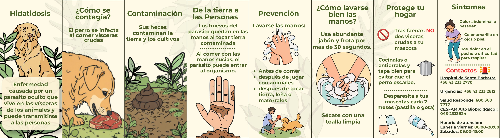
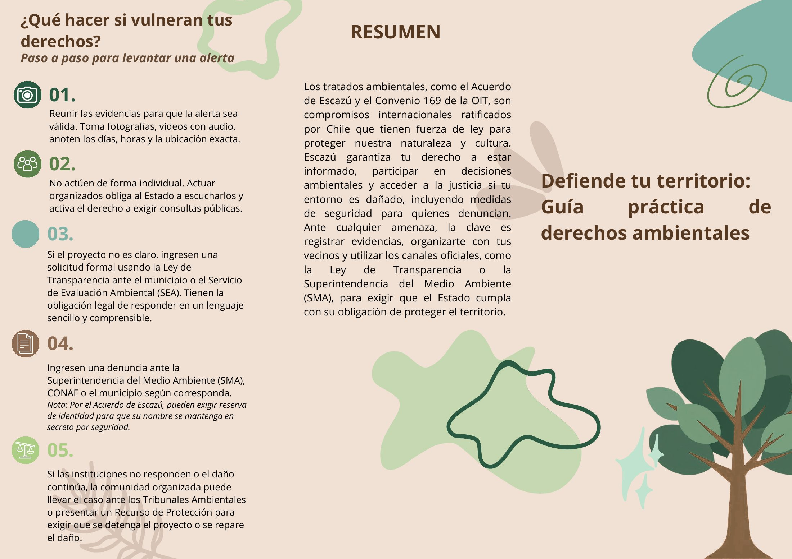
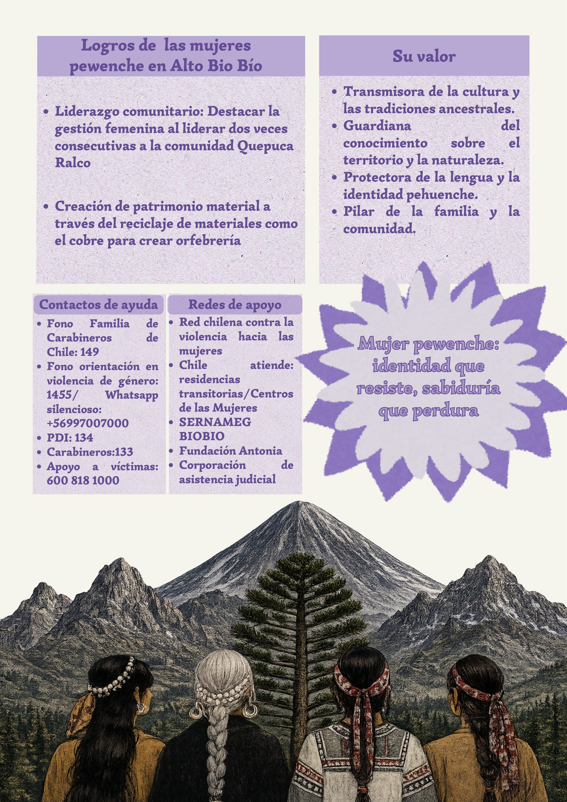

¿Qué es la hidatidosis?Cómo se contagia, cómo prevenirla, síntomas y contactos de salud.

Defiende tu territorio: guía práctica de derechos ambientalesQué hacer si vulneran tus derechos ambientales: paso a paso para levantar una alerta.

Mujer pewenche: identidad que resiste, sabiduría que perduraPóster sobre los logros y el valor de las mujeres pewenche en Alto Biobío, con contactos de ayuda y redes de apoyo.
 Guía de campo: árboles y arbustos
Guía de campo: árboles y arbustosÁrboles, arbustos y hierbas con su nombre común, científico y pewenche, descripción y usos.